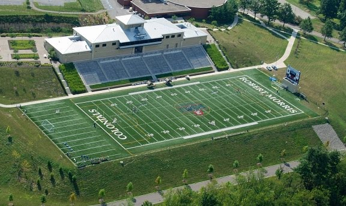

After 11 years of playing its football games less than a mile up the street at Moon Stadium, Robert Morris University opened Joe Walton Stadium in 2005, the first on-campus football field named in honor of a head coach that started the program from scratch and served 20 years at the helm. Built over the course of 13 months and at a cost of $10 million by Mosites Construction Company, Joe Walton Stadium owns a capacity of 3,000 and features a 36,000-square-foot athletic administration building that holds office space for the football coaching staff, athletic administration and Olympic sport coaches. Also included in the building is a state-of-the-art weight room, equipment room, two locker rooms, three classrooms, lobby, press box and President’s box. The Joe Walton Stadium field covers 97,000 square feet, with the surface field turf. The turf consists of sand, rubber and film polyethylene grass-like fabric with secondary backing of high polyurethane. The field, which was replaced in the summer of 2015, is lined for football, lacrosse and soccer. The scoreboard for the stadium was provided by Institutional Specialties, a distributor of Daktronics, located in Pittsburgh, Pa. The music and public address system was provided by Hollowood Music and Sound in McKees Rocks, Pa., and Joe Walton Stadium also includes a portal and plaza. The portal includes 160 pavers to recognize donors to the campaign to raise funds for Joe Walton Stadium, while the plaza includes three kiosks, one each for tickets, concessions and the Barnes & Noble bookstore.
